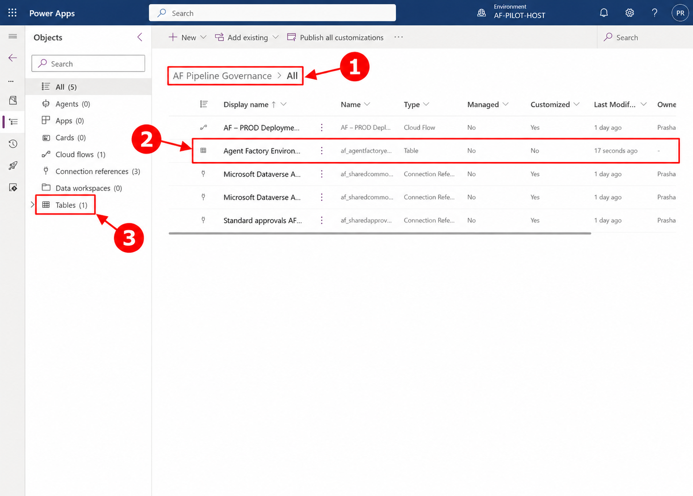
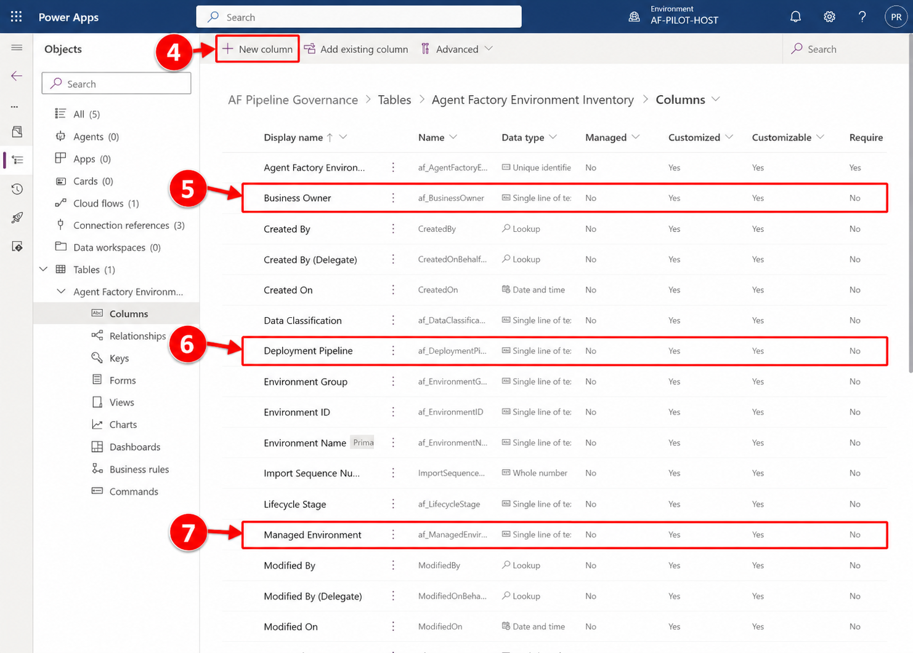
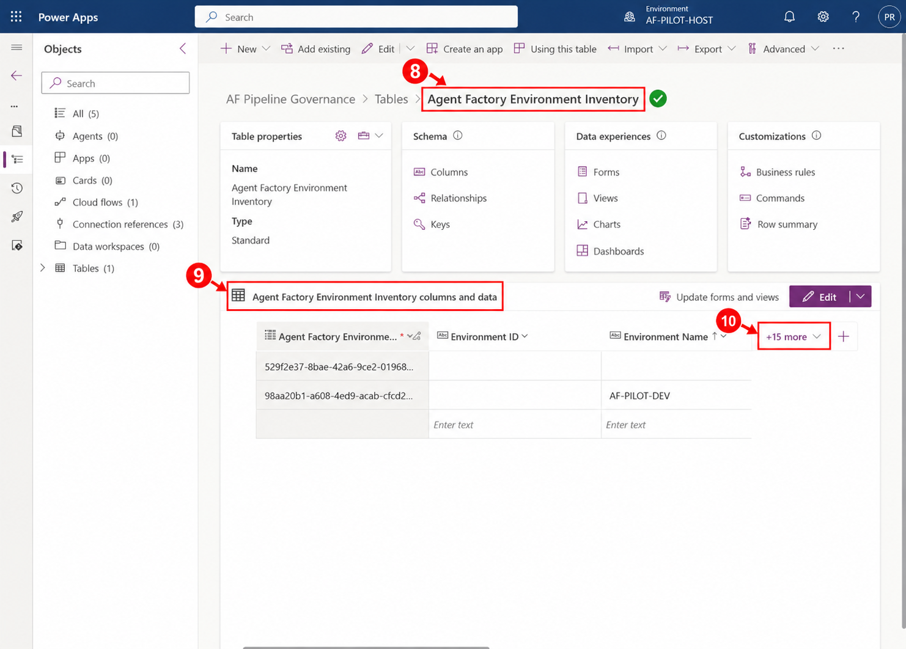
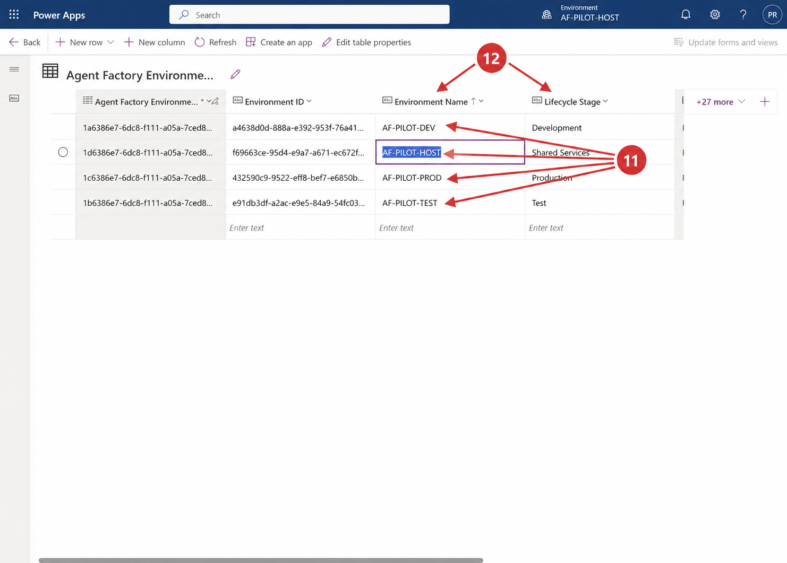
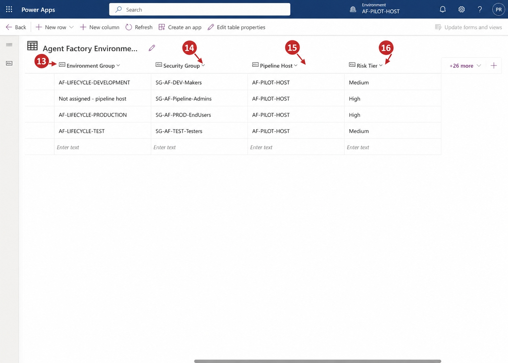

Prashant Rangi · 2026-10-15T09:23:51 · publish
Categories: Copilot Studio, Copilot Studio & Agent Factory
Tags: Agent Factory, Agent Governance, Copilot Studio
An Agent Factory environment inventory is a governed register of the environments used to build, test, deploy, and operate agents. Unlike a platform-generated environment list, the register adds the business context needed for governance: accountable owners, lifecycle stage, risk, data classification, access boundary, pipeline association, operating status, and review date.
A formal inventory is important because technical resources alone do not explain who is accountable, what the environment is allowed to host, or how it reaches production. The register gives governance teams one durable source for reviews, audits, and lifecycle decisions.
Open the custom pipeline host and its governance solution. Create a standard Dataverse table named Agent Factory Environment Inventory so the register is solution-aware, secured, and portable with the governance components.

Add columns for Environment ID, lifecycle stage, environment group, managed status, business owner, technical owner, risk tier, data classification, security group, pipeline host, deployment pipeline, region, status, and next review date. Keep Environment Name as the readable primary field.

Use the supplied Agent_Factory_Environment_Inventory.csv file as the controlled seed. In the table command bar, select Import, upload the CSV, confirm that all 15 governance columns are mapped, and complete the import. Remove incomplete test records so only the four reviewed environment records remain.
| Environment | Lifecycle | Access boundary / role | Risk |
| AF-PILOT-DEV | Development | SG-AF-DEV-Makers | Medium |
| AF-PILOT-TEST | Test | SG-AF-TEST-Testers | Medium |
| AF-PILOT-PROD | Production | SG-AF-PROD-EndUsers | High |
| AF-PILOT-HOST | Shared services | SG-AF-Pipeline-Admins | High |
Validation confirmed that the Dataverse table exists inside the governance solution and contains exactly four reviewed records for DEV, TEST, PROD, and the pipeline host. The imported records include the expected lifecycle, environment-group, security-group, pipeline-host, and risk metadata.



A governed environment inventory turns a collection of Power Platform environments into an accountable operating model. Keeping the register current alongside access, pipeline, and lifecycle controls gives an Agent Factory the traceability required for production governance.